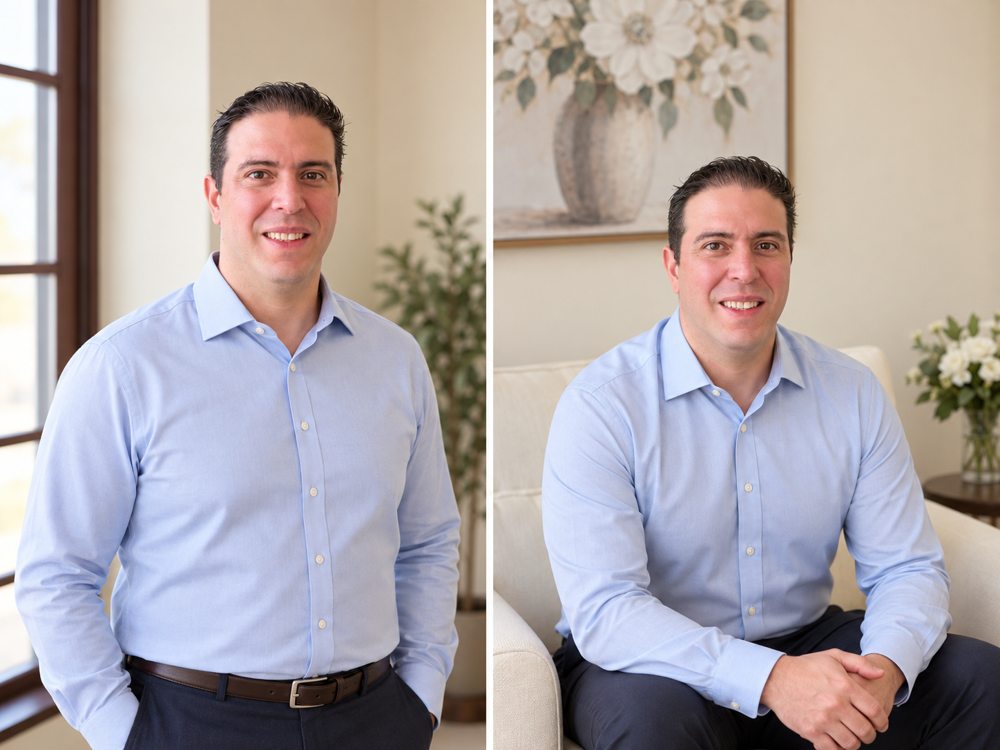

The people behind Aleman Family Care Center — here to know you, not just treat you.
Born and raised in Tampico, Tamaulipas in northeastern Mexico, Dr. Daniela Aleman was drawn to medicine by a lifelong belief that the best care begins with knowing the person, not just the patient.
She earned her medical degree from Universidad de Monterrey (UDEM) and spent formative years as a general practitioner for a small rural community in Mexico — an experience that grounded her in the art of traditional, whole-person clinical medicine. She relocated to Wisconsin in 2016 and completed her family medicine residency at Presence St. Mary and Elizabeth Medical Center in Chicago's Ukrainian Village, serving as Chief Resident during the COVID-19 pandemic.
After six years as a faculty physician at Froedtert West Bend Health Center and Hospital, she made the decision to leave academic medicine and build the practice she always envisioned — one where patients come first, visits aren't rushed, and a doctor truly knows your story. She is a member of the American Academy of Family Physicians (AAFP) and The Menopause Society.
Clinical focus: Women's health · Menopause & HRT · Preventive medicine · Chronic disease · Pediatric care

Alvaro Alexander Aleman is the co-founder and practice administrator of Aleman Family Care Center — the driving operational force behind every patient's experience from the moment they walk through the door.
Alvaro holds a medical background from Universidad de Monterrey (UDEM) in Mexico, where he and Dr. Daniela Aleman first began their shared path in healthcare. He completed his nursing degree at Bryant & Stratton College and is currently pursuing a Master of Science in Nursing at Concordia University Wisconsin on his way to becoming a Nurse Practitioner.
As co-founder, Alvaro oversees patient experience, care coordination, and the culture that makes Aleman Family Care Center feel like a true medical home. He is bilingual in English and Spanish and is committed to ensuring that every patient — from every background — feels respected, welcomed, and heard.
Every member of our team shares the same commitment: treat each patient with the attention, honesty, and warmth we'd want for our own family.
Your story matters. Every appointment starts with us listening to what's actually going on — not jumping straight to a chart.
No medical jargon. We explain what we're recommending and why, so you can make decisions confidently.
You see the same provider over time. We get to know your health story, so we catch what others might miss.
Phone access and real human responses — because care doesn't stop at the office door.